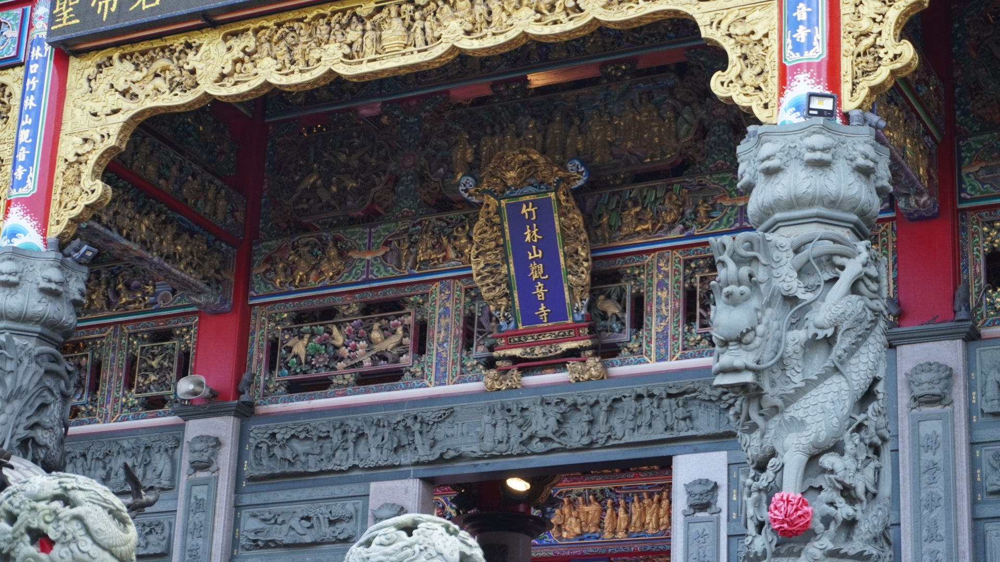
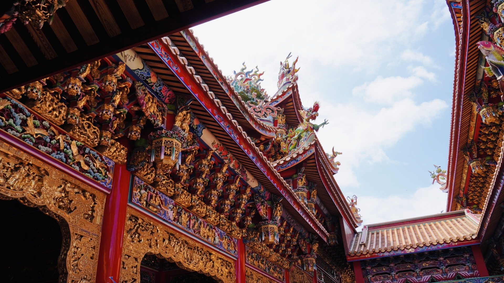
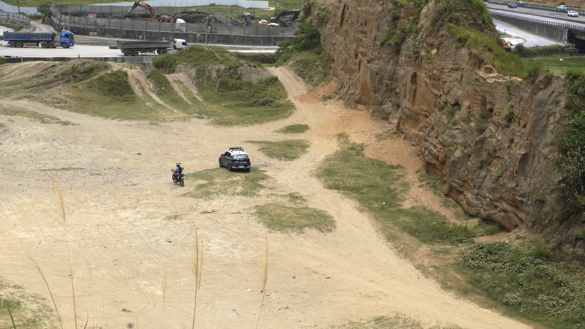

新北市林口區
基本資訊
位於新北市西北側，地處林口台地之上，地勢開闊、視野遼闊，與傳統河岸聚落型城市有著明顯不同的發展脈絡。早期因地形與交通條件限制，開發較晚，隨著高速公路、捷運與新市鎮計畫推動，林口逐漸轉型為北台灣重要的現代化居住與產業區域。 新市鎮規劃使林口呈現整齊街廓與大量公共設施的都市樣貌，同時也保留部分自然坡地與綠地空間。近年大型商業設施、影視產業與醫療資源進駐，使林口成為結合住宅、產業與生活機能的新興城市，展現出新北市向外擴張與多核心發展的代表性樣貌。
推薦景點
| 水牛坑越野場地
是近年逐漸受到戶外運動與越野活動愛好者關注的特殊空間。此地原本為自然形成的土坡與坑谷地形，因地勢起伏大、路面多為泥土與碎石，呈現出粗獷而原始的樣貌，與周邊規劃完善的新市鎮形成強烈對比。 在未經高度人工修整的狀態下，水牛坑保留了林口台地原有的野性地景，成為越野車、機車與戶外挑戰活動的實驗場域，也吸引不少攝影與探險型遊客前來。這片場地展現了林口在現代都市發展之外，仍然存在的自然邊緣地帶，反映出城市與野地交會時所產生的獨特風貌。
| 竹林山觀音寺
是北台灣歷史悠久且具高度信仰影響力的佛教寺院之一。寺廟依山勢而建，環境清幽，長年為地方居民重要的信仰中心，也吸引鄰近地區信眾前來參拜。主祀觀世音菩薩，象徵慈悲與護佑，使寺院在民間信仰中具有安定人心的角色。 在現代城市快速發展的林口，竹林山觀音寺仍維持莊嚴而寧靜的氛圍，形成宗教空間與新市鎮生活並存的對照。每逢重要節慶與宗教活動，寺廟成為凝聚地方情感與文化記憶的場域，也展現林口在現代化進程中延續傳統信仰的深層脈絡。




